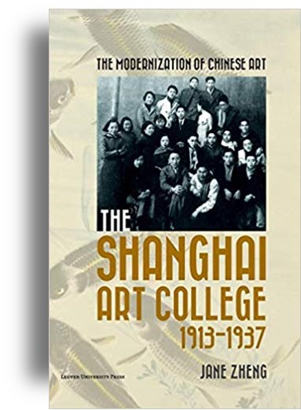

|
Zheng, J., The Modernization of Chinese Art in Republican Shanghai: The Shanghai Art College, 1913-1937 (Leuven
Belgium: Leuven University Press).
( reviewed in Art and Design (December 2018)
reviewed in Twentieth-first Century (February 2018)
reviewed in The China Quarterly (December 2017)
reviewed in The Journal of History of Education Society (September 2917)
reviewed in Taijiquan (May 2016) ))
|
|
Fist academic study on modernity at the |
 |